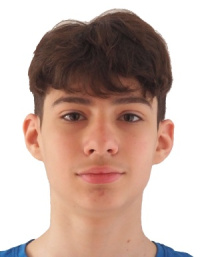
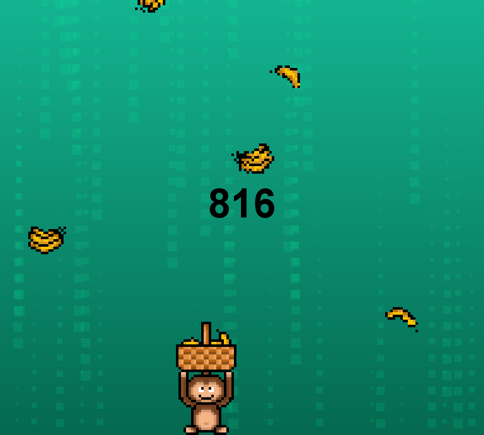

nanoOmega – Farming simulator 1990
První velká textová hra v jazyce Java. Obsahuje dokumentaci, načítání ze souborů a splňuje zásady OOP.
Student Střední průmyslové školy elektrotechnické v Ječné

Jsem student IT, který se zajímá o moderní technologie, počítače a programování. Rád objevuji nové věci, učím se pracovat s různými technologiemi a rozvíjím své technické dovednosti. Baví mě řešit problémy, hledat kreativní řešení a získávat nové zkušenosti. Do budoucna bych chtěl své znalosti využít i v praxi a neustále se zlepšovat v oblasti informačních technologií.
První velká textová hra v jazyce Java. Obsahuje dokumentaci, načítání ze souborů a splňuje zásady OOP.
Textová hra v Javě, implementace návrhového vzoru Command, samostatné programování.

Jednoduchá 2D Java hra s uživatelským rozhraním.
| Dovednost | Úroveň |
|---|---|
| Datové struktury (Slovník, Halda, Zásobník) | pokročilý |
| Teorie algoritmů, časová a prostorová složitost | mírně pokročilý |
E-mail: hrus.matous@gmail.com